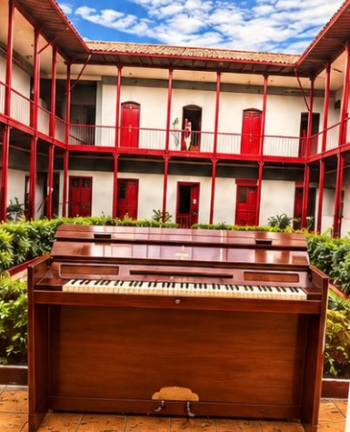

Un Tesoro del Arte Sonoro
El minipiano Eavestaff y su banqueta “Ministool”Este minipiano no es un adorno: es el corazón de las inolvidables tardes de tertulia, música y calidez que han vivido en nuestra familia por generaciones. Hoy deja de ser un recuerdo privado para convertirse en un regalo que compartimos contigo.
47 años buscando
esta pieza única
esta pieza única

Ingeniería Revolucionaria
- Diseñado en Inglaterra por la célebre casa W. G. Eavestaff & Sons (fundada en 1828), este Minipiano revolucionó la época al lograr el sonido resonante de un gran piano en un formato compacto y elegante.
- Un Hallazgo Extraordinario: En el coleccionismo internacional es casi imposible encontrar un minipiano que conserve su banqueta original de fábrica. ¡El nuestro la conserva intacta!
Sello Oficial
- Grabado en la madera conserva su nombre registrado “Ministool”, creado por los hermanos Brasted en la década de 1930.
Diseño Art Decó
- Combina estética y funcionalidad con su tapa abatible en tapicería original, pensada para guardar las partituras de la época.
Patentes Reales
- Cuenta con sus sellos y números de registro de propiedad industrial del Reino Unido (Regd. No. 567988 y 796883/801119), certificando su origen legal a mediados del siglo XX.